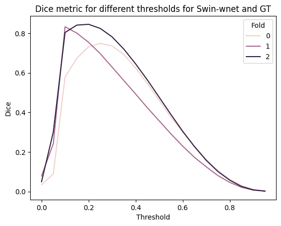
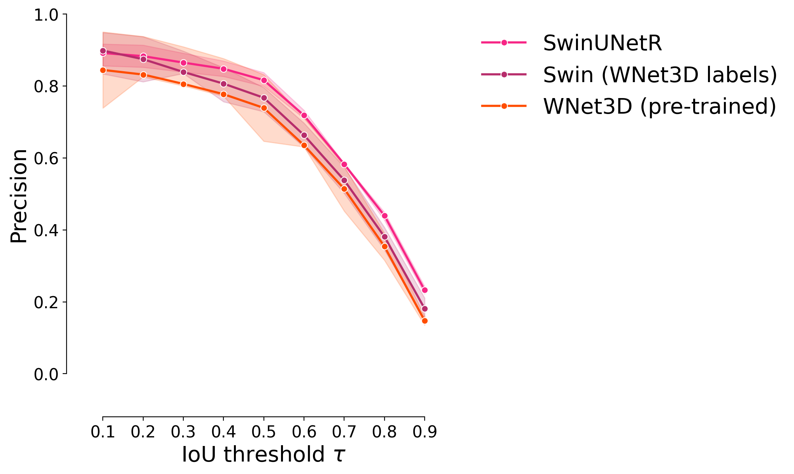
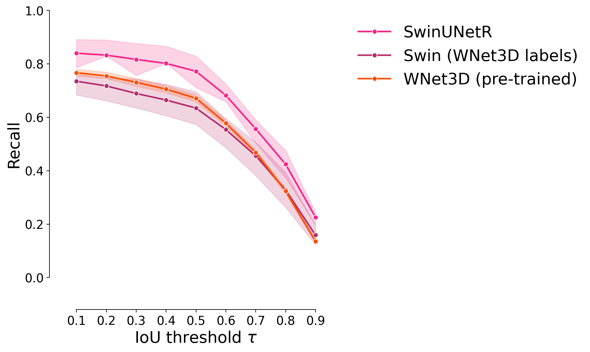
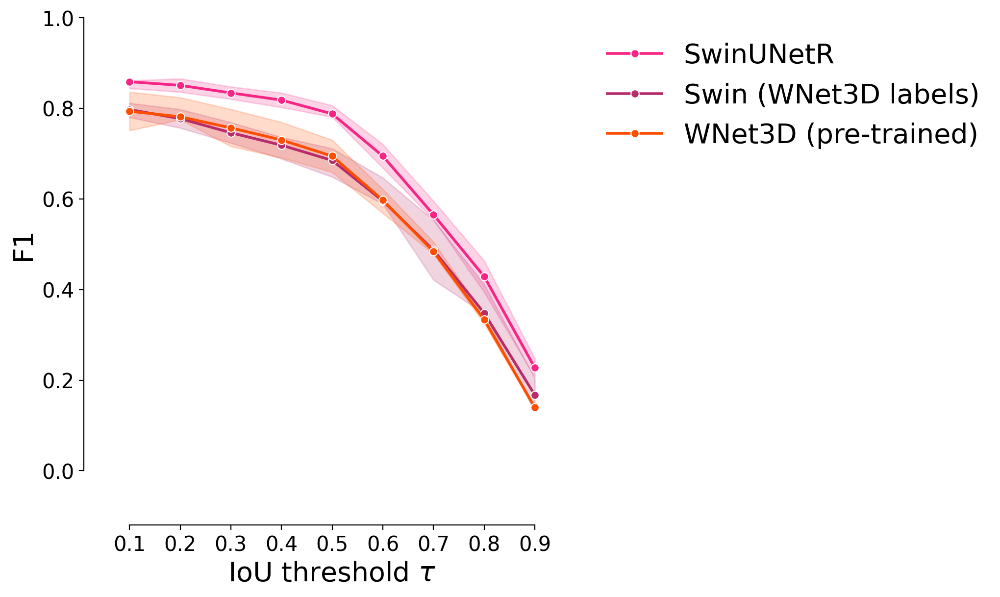
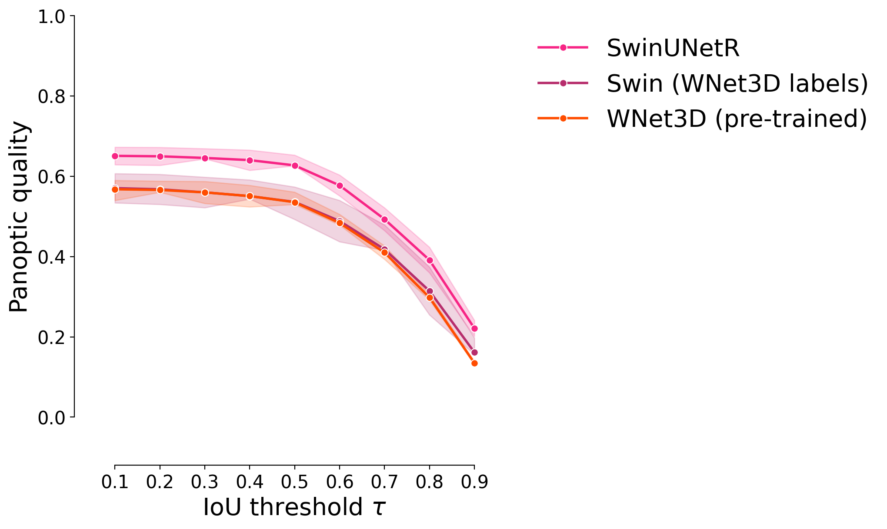
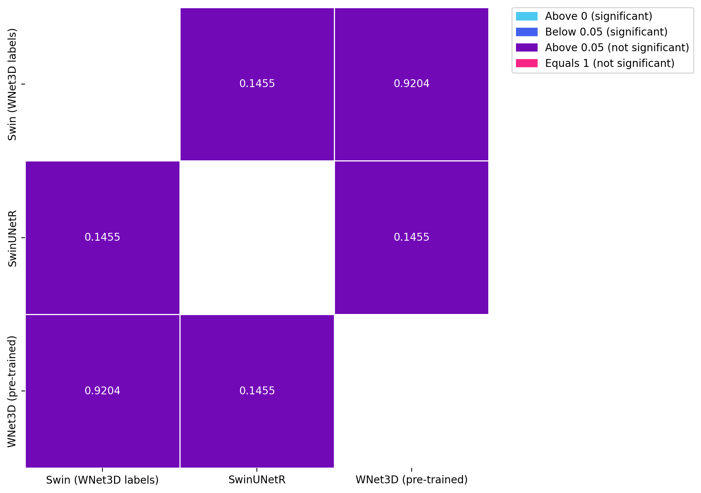

Retraining of a supervised 3D model with unsupervised labels#
Goals :
Show that a 3D model retrained using the output of an unsupervised model can perform similarly than a model trained on ground truth labels.
import numpy as np
from tifffile import imread
import sys
import numpy as np
import pyclesperanto_prototype as cle
from stardist.matching import matching_dataset
sys.path.append("../..")
from utils import *
from plots import *
print("Used GPU: ", cle.get_device())
show_params()
#################
SAVE_PLOTS_AS_PNG = False
SAVE_PLOTS_AS_SVG = True
Used GPU: <NVIDIA GeForce RTX 4070 Ti on Platform: NVIDIA CUDA (1 refs)>
Plot parameters (set in plots.py) :
- COLORMAP : ████████
- DPI : 200
- Data path : C:\Users\Cyril\Desktop\Code\CELLSEG_BENCHMARK
- Font size : 20
- Title font size : 25.0
- Label font size : 20.0
%load_ext autoreload
%autoreload 2
Data#
data_path = DATA_PATH / "RESULTS/SUPERVISED_PERF_FIG/INFERENCE"
fold1_path = data_path / "fold1"
fold2_path = data_path / "fold2"
fold3_path = data_path / "fold3"
def get_fold_data(fold_path):
return [imread(f) for f in fold_path.glob("*.tif") if "label" not in f.name], [imread(f) for f in fold_path.glob("*.tif") if "label" in f.name]
images = []
GT_labels = []
for fold in [fold1_path, fold2_path, fold3_path]:
im, GT_lab = get_fold_data(fold)
images.append(im[0])
GT_labels.append(GT_lab[0])
fold_paths = [fold1_path, fold2_path, fold3_path]
def get_predictions(path):
return [imread(f) for f in path.glob("*.tif")]
#################
swin_paths = [f / "Swin" for f in fold_paths]
segresnet_paths = [f / "SegResNet" for f in fold_paths]
swin_predictions = [get_predictions(p)[0] for p in swin_paths]
segresnet_predictions = [get_predictions(p)[0] for p in segresnet_paths]
swin_wnet_path = DATA_PATH / "RESULTS/WNET_RETRAIN/inference"
swin_wnet_predictions = [imread(str(f)) for f in swin_wnet_path.glob("*.tif")]
swin_wnet_predictions.reverse()
wnet_path = DATA_PATH / "RESULTS/WNET_RETRAIN/inference/WNet"
wnet_predictions = [imread(str(f)) for f in wnet_path.glob("*.tif")]
wnet_predictions.reverse()
Threshold choice#
Since the goal here is to compare the performance of a model trained on ground truth labels and a model trained on unsupervised labels, we use a threshold estimated from the test set directly.
While this is not what one would do when no GT labels are available, it should still allow for a proper comparison.
# plot dice metric for several thresholds for swin-wnet and GT using a dataframe that records which threshold and fold the dice was calculated for
thresh = np.arange(0, 1, 0.05)
rows = []
for t in thresh:
for i, (gt, pred) in enumerate(zip(GT_labels, swin_wnet_predictions)):
dices_row = {"Threshold": t, "Fold": i, "Dice": dice_coeff(
np.where(gt > 0, 1, 0),
np.where(pred > t, 1, 0)
)}
rows.append(dices_row)
dices_df = pd.DataFrame(rows)
sns.lineplot(data=dices_df, x="Threshold", y="Dice", hue="Fold")
plt.title("Dice metric for different thresholds for Swin-wnet and GT")
plt.show()

dices_df.groupby("Threshold").mean().sort_values("Dice", ascending=False).head(5)
| Fold | Dice | |
|---|---|---|
| Threshold | ||
| 0.20 | 1.0 | 0.777428 |
| 0.15 | 1.0 | 0.772413 |
| 0.25 | 1.0 | 0.756872 |
| 0.10 | 1.0 | 0.738819 |
| 0.30 | 1.0 | 0.715765 |
swin_thresholded = [np.where(swin > 0.4, swin, 0) for swin in swin_predictions]
# I am allowing myself to do it this way, since evaluating the threshold on the train set is not possible here (no GT available),
# and usually evaluating the threshold on test data gives the same result as on train data
swin_wnet_thresholded = [np.where(wnet > 0.2, wnet, 0) for wnet in swin_wnet_predictions]
swin_instance = []
segresnet_instance = []
swin_wnet_instance = []
###
wnet_instance = wnet_predictions # these are already instance labels
for i in range(len(fold_paths)):
swin_instance.append(np.array(
cle.voronoi_otsu_labeling(swin_thresholded[i], spot_sigma=0.65, outline_sigma=0.65))
)
swin_wnet_instance.append(np.array(
cle.voronoi_otsu_labeling(swin_wnet_thresholded[i], spot_sigma=0.65, outline_sigma=0.65))
)
# from tifffile import imwrite
# for i in range(len(fold_paths)):
# save_folder = data_path / "processed" / f"fold{i+1}"
# save_folder.mkdir(exist_ok=True, parents=False)
# imwrite(save_folder / "swin_instance.tif", swin_instance[i])
# imwrite(save_folder / "segresnet_instance.tif", segresnet_instance[i])
Performance assessment#
taus = [0.1, 0.2, 0.3, 0.4, 0.5, 0.6, 0.7, 0.8, 0.9]
predictions = [
# segresnet_instance,
swin_instance,
swin_wnet_instance,
wnet_instance,
# cellpose_predictions,
# stardist_predictions,
]
names = [
"SwinUNetR",
# "SegResNet",
"Swin (WNet3D labels)",
"WNet3D (pre-trained)",
# "Cellpose",
# "Stardist",
]
swin_darker,_ = get_shades(COLORMAP[3])
CUSTOM_CMAP = [COLORMAP[3], swin_darker, COLORMAP[4]]
model_stats = []
model_ref_name = []
fold_ref = []
for j, fold in enumerate(fold_paths):
print("Fold ", j+1)
for i, p in enumerate(predictions):
print(f"Validating on {names[i]}")
stats = [matching_dataset(
GT_labels[j], p[j], thresh=t, show_progress=False
) for t in taus]
model_stats.append(stats)
for t in taus:
model_ref_name.append(names[i])
fold_ref.append(j+1)
# uncomment for ALL plots :
# plot_performance(taus, stats, name=names[i])
print("*"*20)
Fold 1
Validating on SwinUNetR
********************
Validating on Swin (WNet3D labels)
********************
Validating on WNet3D (pre-trained)
********************
Fold 2
Validating on SwinUNetR
********************
Validating on Swin (WNet3D labels)
********************
Validating on WNet3D (pre-trained)
********************
Fold 3
Validating on SwinUNetR
********************
Validating on Swin (WNet3D labels)
********************
Validating on WNet3D (pre-trained)
********************
dfs = [dataset_matching_stats_to_df(s) for s in model_stats]
df = pd.concat(dfs)
df["Model"] = model_ref_name
df["Fold"] = fold_ref
df["thresh"] = df.index
df.set_index(["Model", "Fold", "thresh"], inplace=True)
df
| criterion | fp | tp | fn | precision | recall | accuracy | f1 | n_true | n_pred | mean_true_score | mean_matched_score | panoptic_quality | by_image | |||
|---|---|---|---|---|---|---|---|---|---|---|---|---|---|---|---|---|
| Model | Fold | thresh | ||||||||||||||
| SwinUNetR | 1 | 0.1 | iou | 724 | 3017 | 368 | 0.806469 | 0.891285 | 0.734242 | 0.846758 | 3385 | 3741 | 0.705704 | 0.791782 | 0.670448 | False |
| 0.2 | iou | 740 | 3001 | 384 | 0.802192 | 0.886558 | 0.727515 | 0.842268 | 3385 | 3741 | 0.705090 | 0.795311 | 0.669865 | False | ||
| 0.3 | iou | 781 | 2960 | 425 | 0.791232 | 0.874446 | 0.710514 | 0.830761 | 3385 | 3741 | 0.702058 | 0.802860 | 0.666984 | False | ||
| 0.4 | iou | 810 | 2931 | 454 | 0.783480 | 0.865879 | 0.698689 | 0.822621 | 3385 | 3741 | 0.699128 | 0.807420 | 0.664201 | False | ||
| 0.5 | iou | 892 | 2849 | 536 | 0.761561 | 0.841654 | 0.666121 | 0.799607 | 3385 | 3741 | 0.688671 | 0.818235 | 0.654266 | False | ||
| ... | ... | ... | ... | ... | ... | ... | ... | ... | ... | ... | ... | ... | ... | ... | ... | ... |
| WNet3D (pre-trained) | 3 | 0.5 | iou | 974 | 4656 | 2253 | 0.826998 | 0.673904 | 0.590638 | 0.742643 | 6909 | 5630 | 0.518749 | 0.769767 | 0.571662 | False |
| 0.6 | iou | 1640 | 3990 | 2919 | 0.708703 | 0.577508 | 0.466721 | 0.636414 | 6909 | 5630 | 0.467688 | 0.809838 | 0.515393 | False | ||
| 0.7 | iou | 2400 | 3230 | 3679 | 0.573712 | 0.467506 | 0.346976 | 0.515193 | 6909 | 5630 | 0.396466 | 0.848045 | 0.436907 | False | ||
| 0.8 | iou | 3397 | 2233 | 4676 | 0.396625 | 0.323202 | 0.216670 | 0.356169 | 6909 | 5630 | 0.288912 | 0.893907 | 0.318382 | False | ||
| 0.9 | iou | 4704 | 926 | 5983 | 0.164476 | 0.134028 | 0.079738 | 0.147699 | 6909 | 5630 | 0.129802 | 0.968467 | 0.143042 | False |
81 rows × 14 columns
Plots#
Precision#
plot_stat_comparison_fold(df, stat="precision", colormap=CUSTOM_CMAP)
if SAVE_PLOTS_AS_PNG:
plt.savefig( "precision_comparison.png", bbox_inches="tight")
if SAVE_PLOTS_AS_SVG:
plt.savefig( "precision_comparison.svg", bbox_inches="tight")

Recall#
plot_stat_comparison_fold(df, stat="recall", colormap=CUSTOM_CMAP)
if SAVE_PLOTS_AS_PNG:
plt.savefig( "recall_comparison.png")
if SAVE_PLOTS_AS_SVG:
plt.savefig( "recall_comparison.svg", bbox_inches="tight")

F1 score#
plot_stat_comparison_fold(df, stat="f1", colormap=CUSTOM_CMAP)
if SAVE_PLOTS_AS_PNG:
plt.savefig( "f1_comparison.png")
if SAVE_PLOTS_AS_SVG:
plt.savefig( "f1_comparison.svg", bbox_inches="tight")

Panoptic quality#
plot_stat_comparison_fold(df, stat="panoptic_quality", colormap=CUSTOM_CMAP)
if SAVE_PLOTS_AS_PNG:
plt.savefig("panoptic_quality_comparison.png")
if SAVE_PLOTS_AS_SVG:
plt.savefig( "panoptic_quality_comparison.svg", bbox_inches="tight")

Statistical tests#
sns.boxplot(data=df, x="Model", y="f1", palette=CUSTOM_CMAP)
plt.xticks(rotation=45)
plt.show()
1539978751.py (1):
Passing `palette` without assigning `hue` is deprecated and will be removed in v0.14.0. Assign the `x` variable to `hue` and set `legend=False` for the same effect.
from scipy.stats import kruskal
models_f1s = df.groupby("Model").f1
f1_swin = df.loc["SwinUNetR"].f1
f1_wnet = df.loc["WNet3D (pre-trained)"].f1
f1_swin_wnet = df.loc["Swin (WNet3D labels)"].f1
kruskal_test = kruskal(
f1_swin,
f1_wnet,
f1_swin_wnet
)
print("Comparisons of F1 scores between models : ")
print("\n-SwinUNetR\n- WNet3D (pre-trained)\n- Swin (WNet3D labels)")
print("Kruskal-Wallis test: ", kruskal_test)
Comparisons of F1 scores between models :
-SwinUNetR
- WNet3D (pre-trained)
- Swin (WNet3D labels)
Kruskal-Wallis test: KruskalResult(statistic=4.911907390678863, pvalue=0.08578134714721779)
from scikit_posthocs import posthoc_conover
import matplotlib.colors as colors
import matplotlib.patches as mpatches
test_df = df.reset_index()
fig, ax = plt.subplots(figsize=(8, 8), dpi=DPI)
results = posthoc_conover(test_df, val_col="f1", group_col="Model", p_adjust="holm")
low_color = COLORMAP[0]
mid_color = COLORMAP[1]
high_color = COLORMAP[2]
equals_1_color = COLORMAP[3]
levels = [0, 0.05, 0.06, 0.99, 1]
colors_list = [low_color, mid_color, high_color, high_color, equals_1_color]
cmap = colors.LinearSegmentedColormap.from_list("", list(zip(levels, colors_list)))
norm = colors.Normalize(vmin=0, vmax=1)
diag = np.diag_indices(results.shape[0])
results.values[diag] = np.nan
sns.heatmap(results, annot=True, cmap=cmap, norm=norm, cbar=False, fmt=".4f", linewidths=0.5, ax=ax)
patches = [mpatches.Patch(color=low_color, label='Above 0 (significant)'),
mpatches.Patch(color=mid_color, label='Below 0.05 (significant)'),
mpatches.Patch(color=high_color, label='Above 0.05 (not significant)'),
mpatches.Patch(color=equals_1_color, label='Equals 1 (not significant)')]
ax.legend(handles=patches, bbox_to_anchor=(1.05, 1), loc=2, borderaxespad=0.)
# transparent background
fig.patch.set_alpha(0)
ax.patch.set_alpha(0)
if SAVE_PLOTS_AS_PNG:
plt.savefig("WNet_retrain_posthoc_conover.png", dpi=DPI, bbox_inches="tight")
if SAVE_PLOTS_AS_SVG:
plt.savefig("WNet_retrain_efficiency_posthoc_conover.svg", bbox_inches="tight")
